Erzeuge zwei Bilder im Format 16x9 mit deiner Kamera oder deinem Handy (960x540 Pixel, 24Bit), davon eines mit eher flächigen Inhalten (Gang/Decke/Wand/Schrank) und eines
mit feineren Strukturen (Natur) und achte auf gute Belichtung. Typischerweise werden diese Bilder im komprimierten JPG-Format abgespeichert sein. Damit wir sie für unsere
Experimente benutzen können, müssen sie zunächst z.B. in Paint in Bitmaps konvertiert werden. Es kann auch sein, dass die Kamera ein anderes Format und eine andere Pixelzahl
hat, so dass man die Dimensionen noch verändern muss. Speichere deine Bilder aus Paint also im BMP-Format mit 24Bit ab.
Benenne die Dateien "Flaechen_NameArbeitsgruppe.bmp" und Details_NameArbeitsgruppe.bmp". Schick mir die beiden BMP-Dateien unter Nennung deiner Arbeitsgruppe per Mail. In den folgenden Übungen wirst du diese Dateien oft als Ursprungsbilder verwenden. Sollten sie verloren gehen, kannst du sie notfalls wieder von mir erhalten. Darauf werde
ich dir zwei BMP-Dateien mit Testbildern zusenden, die du bei den folgenden Aufgabenpunkten benötigst, gratingHXX.bmp und gratingVXX.bmp.
Beschreibung
Detailliertes Bild "Blütenfeld" im BMP-Format mit BMP Testbild
| 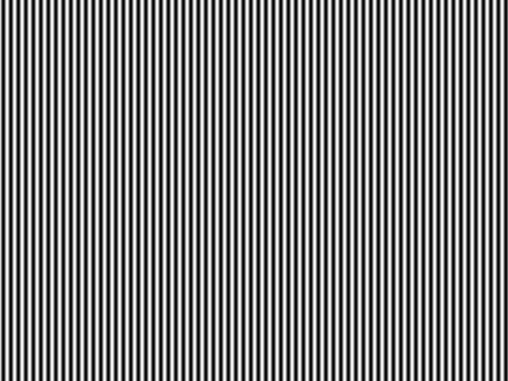 |
Beschreibung
Flächen Bild "Wand" im BMP-Format mit BMP Testbild
| 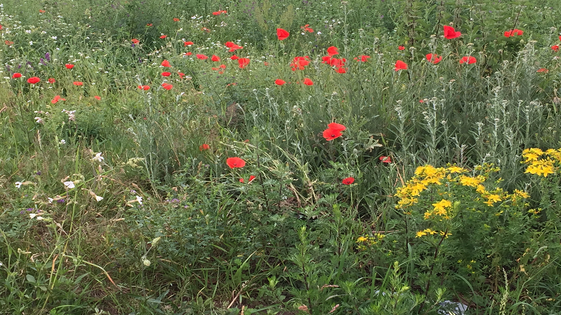 | |
Nun lies die Bilder mit bmp_io ein und erkläre die Angaben im Header, die auf der Konsole ausgegeben werden! Wie erklärt sich die Dateigröße für die beiden Dateien?
Lösung
Die fileSize gibt die Dateigröse in Bytes an, diese ergibt 921654. Sie setzt sich aus volgenden Zahlen zusammen. Zum einen aus den bitsPerPixel 24 --> 8 bits pro Farbkanal bei RGB. Und aus der Breite des Bildes in Pixeln 640 und der Höhe 480.
Wenn wir jetzt die Höhe*Breite*3 rechnen ergibt sich die eigentliche Gröẞe des Bildes 921600 Bytes. Wir Multiplizieren dabei mit der 3 weil sich die 24 Bit aus jeweils 8 Bit RGB zusammensetzen. Es ergibt sich hierbei ein Restwert von 54 Bits, die für die Metadaten reserviert sind, 14 Bites sind dabei für den Header freigestellt
Modifiziere bmp_io dahingehend, dass die RGB Werte der einzelnen Pixel in der BMP-Datei in eine (lesbare) ASCII-Datei geschrieben werden. Es reichen dabei jeweils eine Zeile und eine Spalte! Lies die von mir geschickten Testdateien ein und schätze aus den resultierenden Zahlenfolgen die Periodendauer in Pixeln in horizontaler und vertikaler Richtung. (Ortsfrequenz berechnen und jeweils eine Periode horizontal und eine vertikal für das Übungsprotokoll abspeichern).
Lösung
ASCII-grating_Horizontal248 248 248 246 246 246 192 192 192 111 111 111 37 37 37 1 1 1 19 19 19 83 83 83 165 165 165 232 232 232 254 254 254
Periodendauer ca. 33px.
Die Ortsfrequenz beträgt ca. 1⁄33 -¹
251 251 251 244 244 244 195 195 195 122 122 122 51 51 51 6 6 6 5 5 5 48 48 48 118 118 118 192 192 192 243 243 243 252 252 252
Periodendauer ca. 36px
Die Ortsfrequenz betraägt ca. 1⁄36 -¹
Beschreibung
Diese ergibt sich aus der Zählung des ersten größten Pixels bis zum nächsten größten Pixels. Diesen Vorgang wiederholen wir einige male und bilden einen Durschnitt.
Auch bei der Bildabtastung muss das sogenannte Abtasttheorem eingehalten werden. Wie lautet es und wie läßt sich der Grenzfall, für den es gerade noch gilt, illustrieren (Zeichnung !)?
| 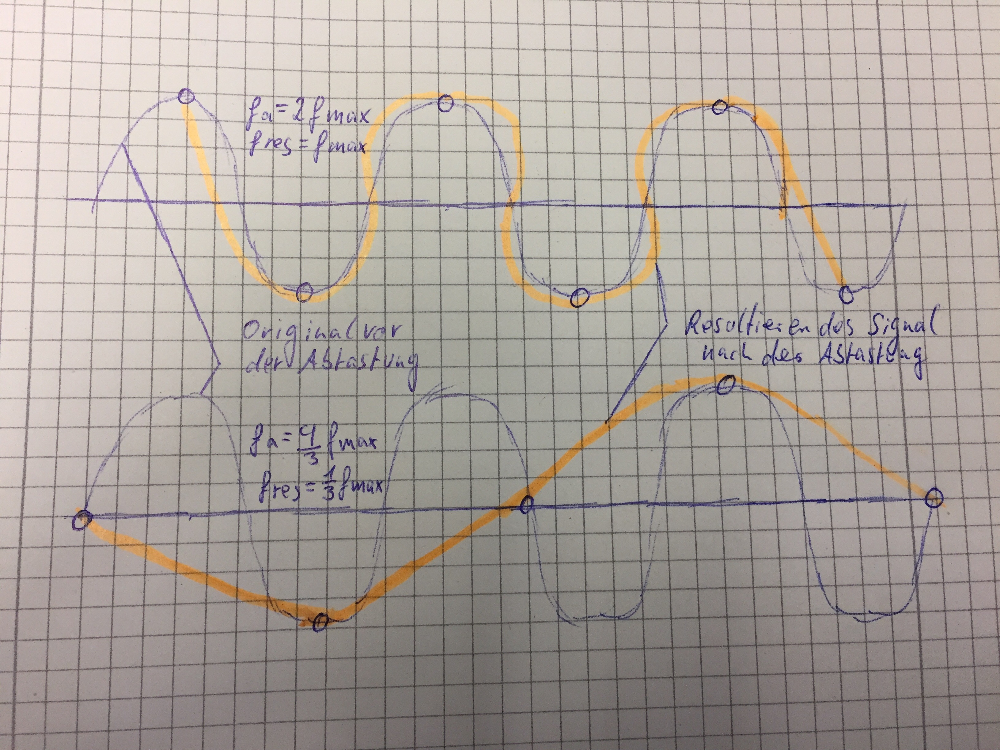 |
Lösung
Das Abtastheorem besagt, dass ein auf fmax bandbegrenztes Signal aus Folge von Abtastwerten exakt rekonstruiert werden kann, wenn es mit einer Frequenz von größer als 2*fmax abgetastet wurde. (Abtasttheorem fa>2*fmax). Ortsfrequenz f, erscheinen im Ergebnis als niedrige Frequenzen wenn Nyquist-Frequenz höher sind. Somit werden sie unterabgetastet, man nennt dies auch undersampled.
Erzeuge aus deinen eigenen Farbbildern Graustufen-Bilder. Dazu muss der Helligkeitswert Y aus den RGB-Werten errechnet werden (wie und woher kommt die Formel?). Mit diesem Y-Wert wird dann die R, G und B-Information überschrieben. Speichere die Graustufenbilder ab.
Lösung
Die Formel setzt sich wie Folgt zusamen R=G=B => Grauwert. Diese Formel setzt sich daher so zusammen, da unser Auge auf jeden Farbston mit spezieller wellenlänge, unterschiiedlich war nimmt. Unser Auge nimmt die Grüne Farbe am hellsten war, den Rotton etwas weniger hell und das Blau noch weniger. Diesen Unterschied müssen wir ausgleichen dadurch ensteht diese Formel y= 0.3*rot + 0.6*grün + 0.1*blau. Gängige Programme haben diese Formel schon integriert, daher kann man R=G=B verwenden. In Java benutzen wir y= 0.33*R + 0.33*G + 0.33*B oder ds = (r+g+b)/3; wie wir.
Code:
for(int y = 0; y < bmp.image.getHeight(); y++) { for(int x = 0;x < bmp.image.getWidth(); x++) { r = bmp.image.getRgbPixel(x, y).r; g = bmp.image.getRgbPixel(x, y).g; b = bmp.image.getRgbPixel(x, y).b; ds = (r+g+b)/3; bmp.image.getRgbPixel(x, y).r = ds; bmp.image.getRgbPixel(x, y).g = ds; bmp.image.getRgbPixel(x, y).b = ds; }
| 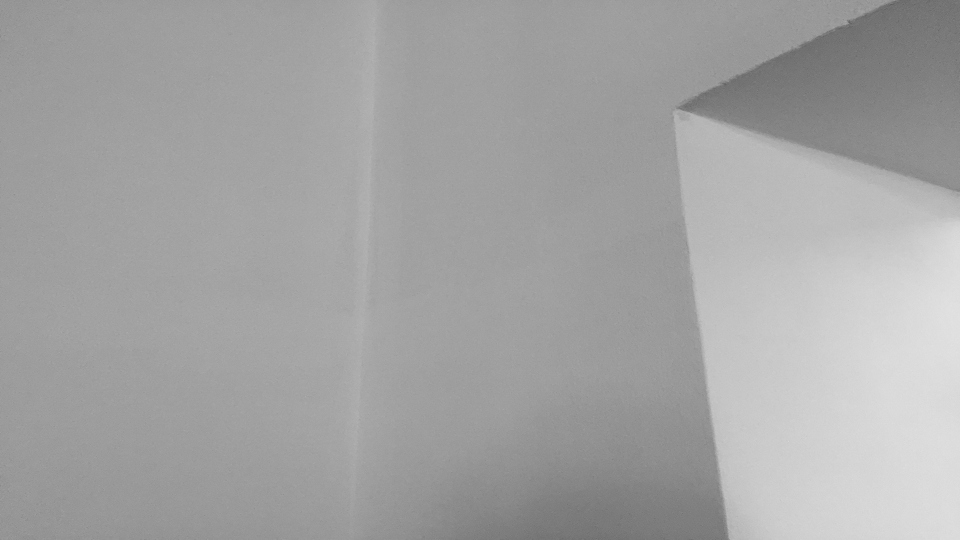 |  |
Erkläre, wie bei Bild- und Videoaufnahmen Aliasing entstehen kann. Ähnlich wie bei der 1. Übung am Audiosignal wollen wir auf das Bild ein Down-Sampling anwenden und sehen, wann dabei Aliasing auftritt. Beim Audiosignal haben wir jedes zweite Sample verworfen und damit die Abtastfrequenz halbiert. Beim Bild verringern wir die räumliche Auflösung, indem wir die Zahl der Bildzeilen bzw. Bildspalten verringern. Dabei wollen wir das Bild allerdings nicht verkleinern - was normalerweise die Folge wäre - sondern einfach die ungeradzahligen Spalten durch den Inhalt der geradzahligen Spalten ersetzen, d.h. Spalte 1 wird durch Spalte 0 ersetzt, Spalte 3 durch Spalte 2 etc. und analog für die Zeilen. Wenn das Ursprungsbild nun sehr feine Strukturen aufweist, wie in machen Testdateien, können Aliasing-Verzerrungen sichtbar werden. Achte darauf, dass stets Rot, Grün und Blau getrennt manipuliert werden müssen.
Lösung
Aliasing kann z.B auftreten, wenn ein Bild eine Höhere Auflösung hat, als die Kamera mit der sie aufgenommen wurde. Zudem kann es bei Bildern mit feinen Mustern, mit nicht ausreichender Abtastfrequenz, zu Helligkeitsverläufen kommen, den man Moire-Effekt nennt. Bei Video Aufnahmen kann der Wagon Wheel Effekt auftreten, Bsp. drehende Autoreifen.
Modifiziere bmp_io dahingehend, dass zunächst in jeder Zeile des eingelesenen Bilds jedes ungeradzahlige Pixel durch das davor liegende geradzahlige Pixel ersetzt wird
(horizontales Down-Sampling). Diese Veränderung hat natürlich nur bei einem der beiden Testbilder Sinn (warum?). Speichere das resultierende Bild ab. Da sich die Bildgröße bei
dieser Operation nicht ändert, muss der Bild-Header auch nicht verändert werden. Falls du im Ergebnis keine Veränderung sehen kannst, ersetze mehr Spalten, also Spalte 1 und 2
durch Spalte 0, dann Spalte 1, 2 und 3 durch Spalte 0 usw. Wende diese Manipulation auf die Testbilder an, bis du eine Veränderung in Form eines Moiré-Musters siehst. Notiere,
bei welcher Verringerung du die Veränderungen beobachtest und beschreibe die Veränderungen! Erkläre das Ergebnis an Hand der von dir bestimmten Periodendauer in Pixeln.
Nun wende die Zeilenverringerung vertikal an, d.h. ersetze die Pixel jeder ungeradzahligen Zeile durch die der Zeile davor (vertikales Down-Sampling). Auch hier hat die
Manipulation nur bei einer der Testdateien Sinn!
Abschließend wendest du noch das horizontale Downsampling auf deine eigenen Bilder an, bis du eine sichtbare Verschlechterung beobachtest. Notiere auch hier, wann dies bei
deinen beiden Bildern der Fall ist
Lösung
Es macht nur beim Horizontalen Bild sinn, da man die Pixel nur auf der Horizontalen verschieben tut, auf der Vertikalen würde man davon nichts merken und umgekehrt fürs vertikal Sampling.
Code:
for(int y = 0; y < bmp.image.getHeight(); y++) { for(int x = 0;x < bmp.image.getWidth(); x++) { r = bmp.image.getRgbPixel(x, y).r; g = bmp.image.getRgbPixel(x, y).g; b = bmp.image.getRgbPixel(x, y).b; ds = (r+g+b)/3; bmp.image.getRgbPixel(x, y).r = ds; bmp.image.getRgbPixel(x, y).g = ds; bmp.image.getRgbPixel(x, y).b = ds; }
Das Downsampling bei dem Horizontalen Bild, hat bereits das manipulieren einer Zeile Auswirkungen und bei drei Zeilen tritt der Moire-Effekt auf.
Moire Effekt bei dem Horizontalen Bild
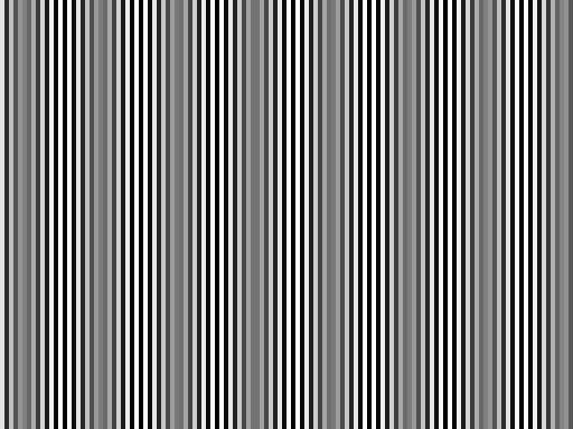Das Downsampling bei dem Vertikalen Bild, hat bereits das manipulieren einer Reihe sichtbare Auswirkungen, bei vier Reihen tritt der Moire-Effekt auf
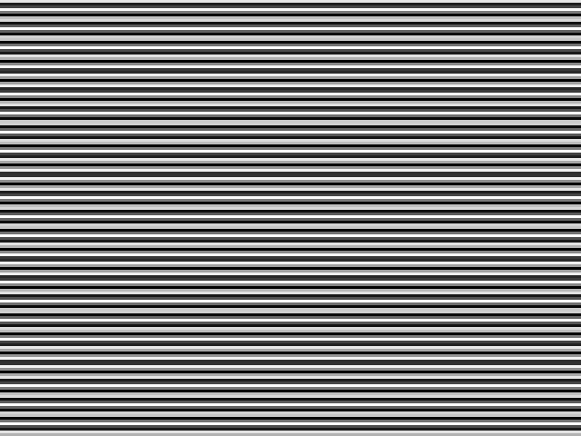Moire Effekt bei dem Vertikalen Bild
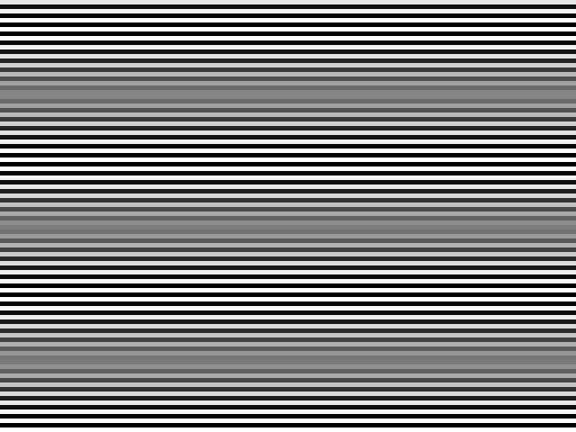Moire-Effekt bei dem Detailirten und dem Flächen Bild
| 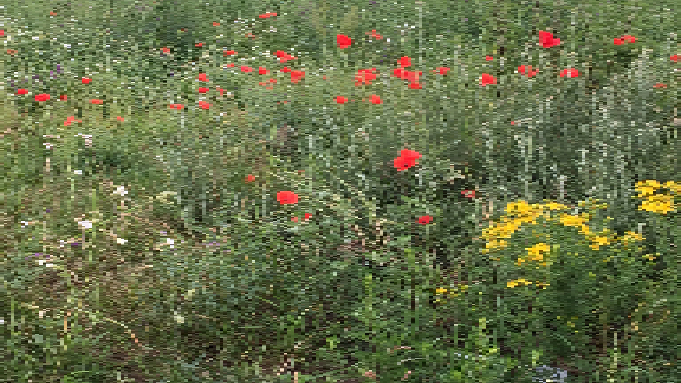 | 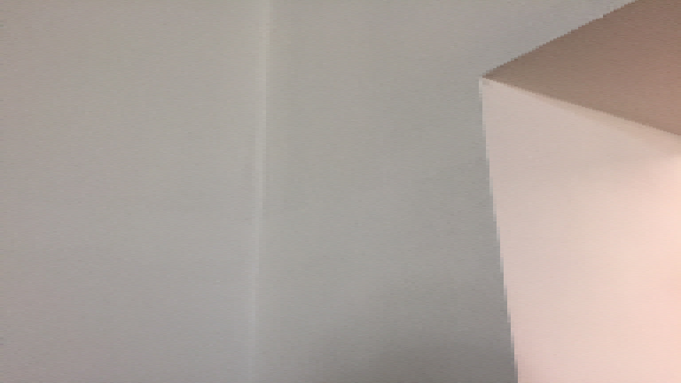 |
Wir wollen nun bmp_io so modifizieren, dass wir die Bitzahl reduzieren können. Dazu können wir z.B. alle RGB-Werte durch eine Potenz von 2 teilen (Integer-Division ohne
Rest). Damit das resultierende Bild nicht dunkler wird als das Original, kompensieren wir die Operation durch Multiplikation mit derselben Zweierpotenz. Zu beachten: Der Datentyp
hat nach wie vor eine Bittiefe von 24Bit (8bit pro Farbe!)
(Denselben Effekt erreicht man auch durch einfaches logisches 'Verunden' mit einem entsprechenden HEX-Wert, indem man mit dem LSB beginnend Bits 'ausblendet'.)
Lösung
for(int y = 0; y < bmp.image.getHeight(); y++) {
for (int x = 0; x < bmp.image.getWidth(); x++) {
r = bmp.image.getRgbPixel(x, y).r/j;
g = bmp.image.getRgbPixel(x, y).g/j;
b = bmp.image.getRgbPixel(x, y).b/j;
bmp.image.getRgbPixel(x, y).r = r * j;
bmp.image.getRgbPixel(x, y).g = g * j;
bmp.image.getRgbPixel(x, y).b = b *j;
}
}
Mit dem entstandenen Programm verändern wir die in Aufgabe 1 erzeugten BMP-Dateien. Ab welcher Bitzahl tritt beim Detail-Bild und beim Flächen-Bild eine sichtbare Verschlechterung der Qualität ein? Wie kann man diese Verschlechterung am besten beschreiben? (Alle Ergebnisbilder ins Übungsprotokoll)
Lösung
Bei 5Bit laufen die farben ineinander über, die aber ab 4 Bit Sichtbar
| 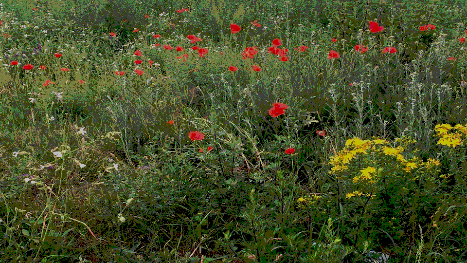 |  |
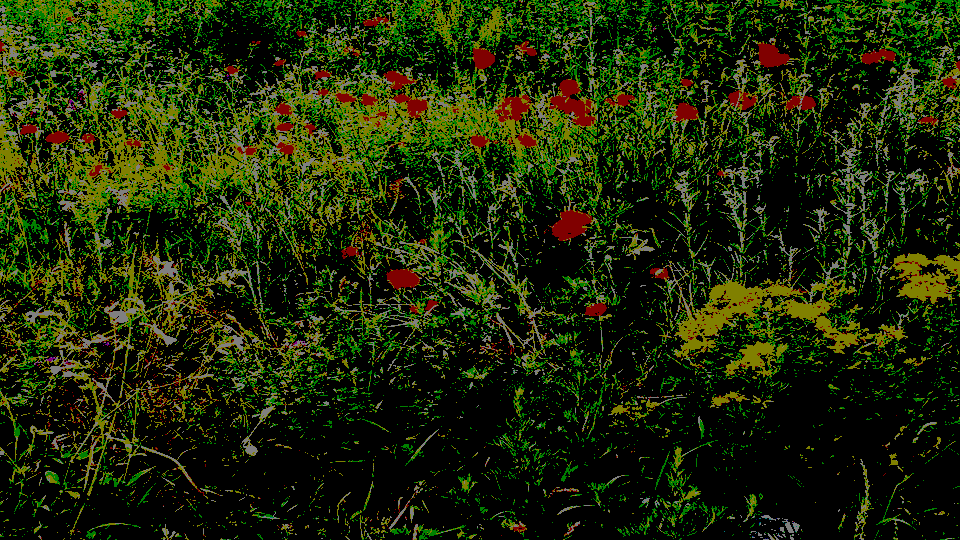 |
Bei dem Flächenbild treten leichte Veränderungen bei 3Bit auf, deutlicher werden sie ab einer 5Bit Veränderung.
| 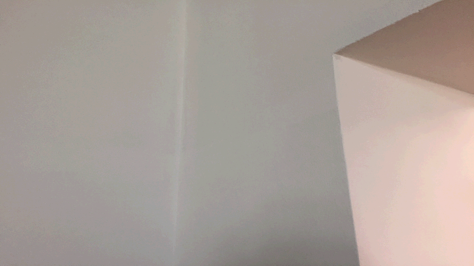 | 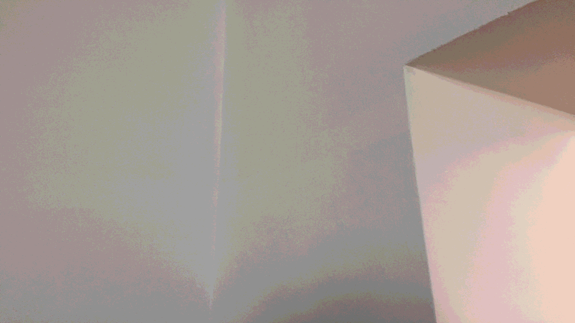 | 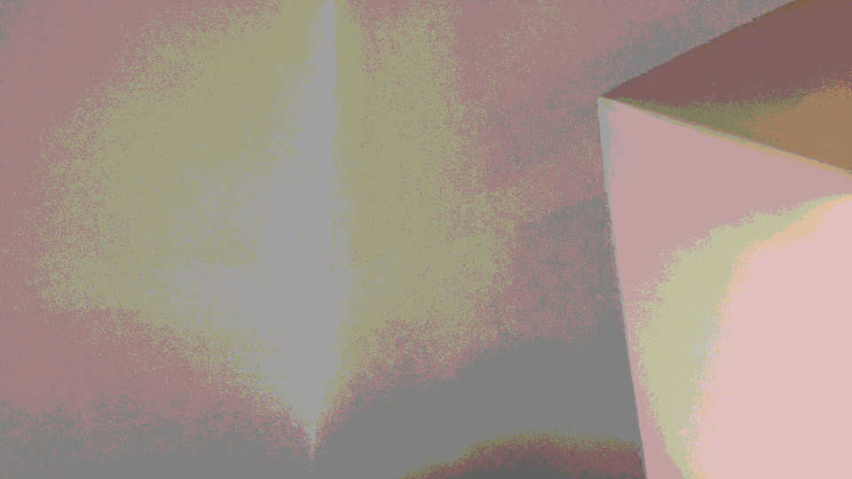 | 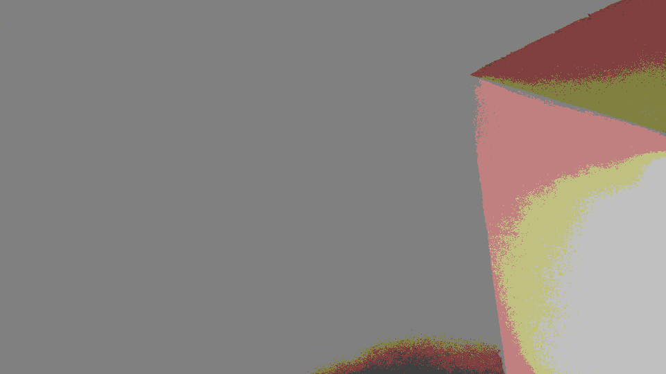 | 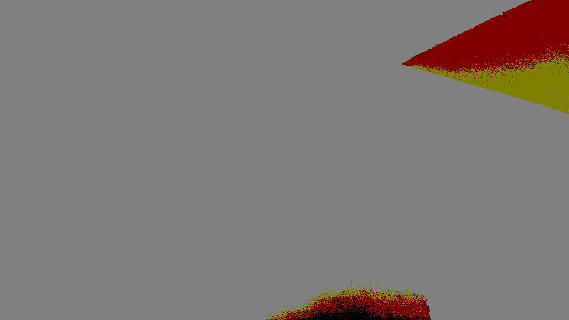 |
Modifiziere dein Programm noch einmal so, dass auch das Differenzbild zwischen Original und bitreduziertem Bild, das heißt das Fehlerbild ausgegeben, werden kann. Beachte dabei, dass bei der Differenzbildung negative und positive Werte auftreten können. Diese müssen wieder in den Wertebereich 0...255 transformiert werden, d.h. auf den Mittelwert 127 gebracht werden (wie?). (Bilder all dieser Fälle ins Übungsprotokoll)
Lösung
Falls die Zahlen negative sind, werden die Zahlen mit -1 Mal genommen, damit sie in einen Wertebereich von 0-255 kommen
Code:
for(int y = 0; y < bmp.image.getHeight(); y++) { for (int x = 0; x < bmp.image.getWidth(); x++) { rO = bmp.image.getRgbPixel(x, y).r; gO = bmp.image.getRgbPixel(x, y).g; bO = bmp.image.getRgbPixel(x, y).b; r = bmp.image.getRgbPixel(x, y).r/j; g = bmp.image.getRgbPixel(x, y).g/j; b = bmp.image.getRgbPixel(x, y).b/j; rg = rO - r; gb = gO - g; bg = bO - b; if(rg < 0) { rg *= -1; } if (gb < 0) { gb *= -1; } if (bg < 0) { bg = -1; } bmp.image.getRgbPixel(x, y).r = rgf; bmp.image.getRgbPixel(x, y).g = gbf; bmp.image.getRgbPixel(x, y).b = bgf; } }
Fälle der Detail Bilder
 |
 |
Fälle der Flächen Bilder
| 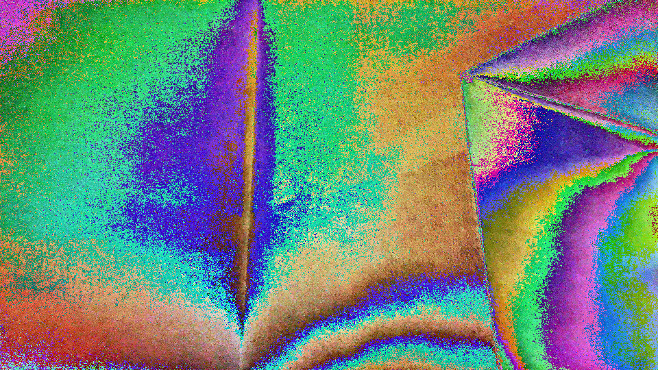 | 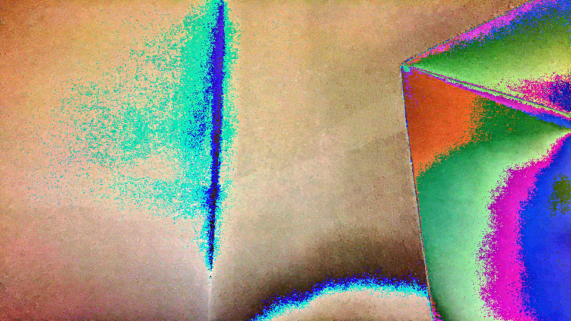 | 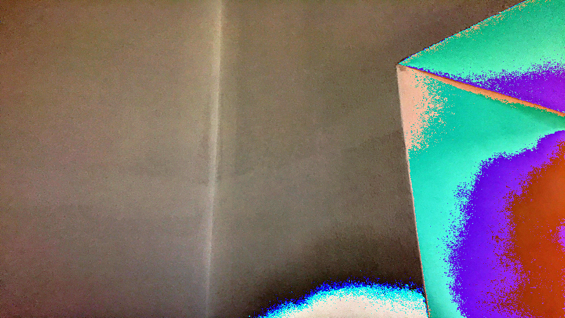 |